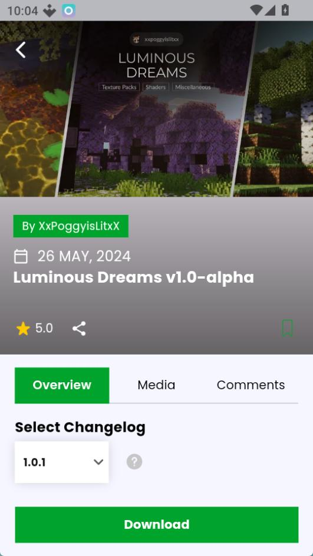

Minecraft 手机版玩家必备：从零学会用 MCPEDL 装模组和地图
还在发愁手机版 Minecraft 内容太少？MCPEDL 是目前最火的内容资源库，本文带你从安装到第一次导入全部走一遍，全程零基础。
如果你用手机玩过 Minecraft，大概率有过这种感觉：原版的内容玩久了有点单调，想加点新东西又不知道去哪找、怎么装。mcpedl官网 就是为这个问题而生的——你可以把它理解成 Minecraft 手机版的「内容超市」，玩家做的各种模组、材质包、地图、皮肤，都能在这里找到，然后一键导入游戏里。这篇文章不需要你有任何基础，跟着做五分钟，就能把第一个自定义内容放进你的世界。

五分钟上手：从下载到第一次导入
整个流程分成四步，每一步都很短。你只需要一台装了 Minecraft 基岩版的安卓手机。
第一步：装 MCPEDL
MCPEDL 有两种装法。如果你手机上有 Google Play 商店，直接搜应用名就能装，开发者显示是 Overwolf。没有 Play 服务的设备也没关系，从官方下载拿到 APK 安装包，在文件管理器里点开就行。安卓 8 以上第一次装非商店应用会弹窗问你要不要允许这个来源，点允许就好，不用全局放开所有未知来源。装完之后桌面上会出现一个绿色的图标，点开就是了。
第二步：首启核对三件事
第一次打开应用，先弹协议和权限，一个个点过去就好。进主页之前，花两分钟核对一下：
- Minecraft 本体装了吗？ MCPEDL 只负责找内容和下载文件，真正的导入和游玩全部发生在游戏里。游戏没装的话先去装游戏，装完再回来。
- 界面是英文的。 目前没有中文选项，这个要有心理准备。不过好消息是你找资源不用懂太多英文，常用的几个关键词比如 skin（皮肤）、map（地图）、shaders（光影）搜一下就懂了。
- 存储空间够不够？ MCPEDL 本身不大，但下载的内容文件另占地方——材质包、光影从几 MB 到上百 MB 不等，大地图单个可能超过 1G。剩个两三个 G 基本够用。
第三步：找一个内容下载
主界面底部五个标签，中间那个是搜索。你也可以先在首页信息流里逛，看看别人都在下什么。决定好要哪个之后，点进去详情页，下载按钮就在那。下载进度跑完，底部「Downloads」标签里会多一条记录。

第四步：导入进游戏
这是关键的一步，但其实操作很简单。在 Downloads 标签里，点一下已完成那条的下载图标，系统会弹出一个「选择打开方式」的窗口，选 Minecraft。游戏会自动拉起来，屏幕上方先出现 Import started...，等几秒变成 Successfully imported 就成功了。
导入完成之后文件去哪了？不同内容类型不一样：材质包和 Addon 进世界设置里激活，地图出现在世界列表里，皮肤进更衣室。打开游戏找一下就能看到。
上手后先玩这三个功能
MCPEDL 里内容类型很多，但作为新手，优先碰这三个最值。
材质包：一秒换脸，零风险
材质包只改一件事——方块、物品、界面看起来长什么样。它不动游戏行为、不生成新内容，所以最安全，导入激活立刻见效果，不喜欢随时换回来。你会看到很多材质包标题上带 x16、x32、x64 这样的标签，这是贴图分辨率。x16 就是原版画质，任何设备都无压力；x64 明显精细，中端机扛得住；x128 接近高清贴图，但对手机性能要求高，旗舰机才考虑。如果不确定选哪个，先从 x32 开始试，不会错。关于不同分辨率的实际效果对比和全局激活的设置方法，mcpedl文档里有更详细的说明。
Addon：给游戏加玩法
如果说材质包是给游戏换皮肤，那 Addon 就是给游戏加新玩法。它可以加新的生物、新的工具、新的物品，甚至改游戏规则。比如你想让世界里多出一些奇幻生物，或者想加一套新的科技装备，Addon 就是干这个的。选 Addon 时留意一下描述里写了什么，有些会标注需要搭配特定的材质包或光影。
地图：玩别人造的世界
这是最适合「拿来主义」的功能。社区里有人花了几十小时造的跑酷地图、解谜地图、生存挑战地图，你下载导入就能直接玩。导入后在游戏的世界列表里找得到，和你自己的世界放一起，打开就进。有些地图还配了专属材质包和规则，体验会完整。

小白的三个常见疑问
Q：导入时报错怎么办？
最常见的三种：Duplicate Pack Detected 就是同一个包你已经装过了，不用重复导；Failed to import 多半是下载的包文件缺东西，重新下载一般能解决；Not a Valid Zip Archive 说明文件可能下载损坏了，删掉重下。
Q：下载好的文件存哪了，能不能手动导入？
应用会自己管理下载目录，正常情况下你不用管。除非遇到 zip/rar 老式打包需要手动解压，否则建议一律走应用内的 Downloads 标签点导入——这条路走的是系统直达通道，不容易出问题。
Q：光影和材质包能同时开吗？
可以叠加，但要看你手机扛不扛得住。很多高清光影假定你在用配套的材质，一起上效果最好，但性能压力也最大。如果叠加之后明显掉帧发热，先关一个试试。
写在最后
玩到这里，你已经能独立找到内容、下载、导入、激活了——这是 MCPEDL 的核心链路，后面就是靠你自己逛、自己试。进阶一点可以去研究一下全局资源（Global Resources）设置，让某个材质包在所有世界里默认生效，不用每个世界单独激活。MCPEDL 的社区更新很活跃，经常有新东西出来，没事就刷一刷首页信息流，总能挖到好玩的。本文写作用到的资料同步放了三份，GitHub 上更新最勤，国内网络访问慢的话 Gitee 和 GitCode 上也有同一份，随便挑哪个都行。